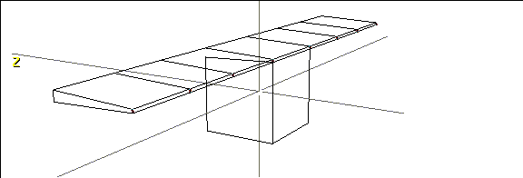
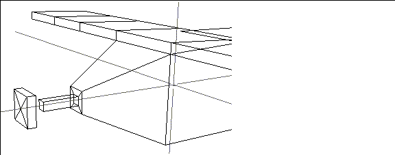

[N-World Contents] [Book Contents] [Prev] [Next] [Index]
Constructing an Airplane
In this chapter you'll learn some of the basic working ideas for N-Geometry, modeling an airplane from scratch.
In this Chapter
You'll learn about the following topics:
Modifications
Hot Keys
Modes
The Default Operation Key
You'll learn how to assign a default function in N-Geometry, a shortcut for executing a given command over and over.
Before You Begin
Starting the Airplane
1. (CLICK-L) on GeoMenus>File>New Object.
- N-Geometry displays a list of primitives that you can create:
Figure 2.1 Creating a primitive
2. (CLICK-L) on cube.
- A cube appears in your N-Geometry window:
Figure 2.2 A cube primitive
3. (SHIFT-L) on the top face of the cube.
- This is the face with its normal facing the +Y axis.

Figure 2.3 Select the top face of the cube
- The modify menu for faces appears:
Figure 2.4 The modify menu
4. (CLICK-L) on Extrude.
- Move your mouse to the right. The face moves up along its normal. Extrude the face so that it looks like the cube in Figure 2.5:
Figure 2.5 Extruding a face
- Note. Move the mouse left to move the face toward (and even into) the cube's body.
Hot Keys
There are quite a few one stroke "hot keys" in N-Geomety. Some of the ones you might find most useful are:
Pulling Out the Wings
Now that you are ready to pull out the wings you will need to re-position your camera:
5. Move your cursor over the N-Geometry window and (CLICK-M).
- Now you can move the camera.
6. (HOLD-M) and drag the mouse toward you.
- As you move the camera, the cube recedes.
7. (CLICK-R) on faces on the element sensitivity menu.
- Note. (CLICK-R) on any item on the element sensitivity menu (points. segments, faces, bodies) to go into collect mode for that element type. Note that the word collect is highlighted in the element sensitivity menu.
- (CLICK-L) on the element type again to exit from collect mode or use the "c" hot key to toggle in and out of collect mode.
8. Collect the two faces whose normals lie along the x axis.
Figure 2.6 Selecting the faces to pull out for the wings
- Remember, you must (CLICK-R) or wave off the Geometry window to end a collection before performing any other modifications.
9. (SHIFT-L) on the N-Geometry window to modify the collection.
10. (CLICK-L) on Extrude.
Figure 2.7 Select Extrude
- Move the mouse to the right and watch the wings grow out along the x axis.
Figure 2.8 Extruding the wings
11. (CLICK-L) to end the Extrude operation.
- Note that the faces stay selected until you select a different element type or start a new collection-this makes it easy to continue working with those faces:
12. (SHIFT-L) on the N-Geometry window.
13. (CLICK-L) on Extrude.
14. Move the mouse to the right and watch the wings grow out along the x axis again.
15. (CLICK-L) to end the Extrude operation.
Now repeat the extrusion using these steps:
16. (SHIFT-L) on the N-Geometry window then (CLICK-L) on Extrude when the Modify menu appears.
- Extrude the selected faces as before.
17. (CLICK-L) to end the Extrude operation.
- After three extrusions your plane wing should look like this:
Figure 2.9 Repeating the Extrude operation
Using the Default Function Key
Performing operations over and over can be tedious. You can assign the last selected command to the Default Function key using the procedure below.
To Store the Operation in the Default Function Key
To Use the Default Function
Tapering the Wings
To improve the plane's aerodynamic design, you can taper the back of the wings:
18. Spin your camera around so that you are looking at the back of the wing.
- (CLICK-M) on the window to start the camera, (CLICK-L) to stop it.
19. (CLICK-R) on segments on the element sensitivity menu.
20. Collect the vertical segments along the trailing of the wing and then end your collection.
Figure 2.10 Select the vertical segments along the trailing edge of the wing
21. (SHIFT-L) on the collection, then (CLICK-L) on Scale.
- As you move the mouse left and right, the back of the wing shrinks or grows alongs its y axis. Taper the back of the wing until it looks right to you.
22. (CLICK-L) to end the scale operation.

Figure 2.11 Tapered wing
Pulling Out the Fuselage
Now let's extrude the cube's back face in order to create the back of the plane.
23. (CLICK-L) on the cube's back face.
- Press the "x" hot key to view the plane from the side (looking along the x axis from the positive end).
24. Extrude the face back as shown in Figure 2.12:
Figure 2.12 Pulling out the fuselage
25. (SHIFT-L) on the collection, then (CLICK-L) on Scale to taper the tail.

Figure 2.13 Use Scale to scale a selected element or group of elements
26. (SHIFT-L) on the N-Geometry window.
- Make sure the back face is still selected.
27. (CLICK-M) on Axis Move.
28. (CLICK-L) on Y.
- Move the mouse to lift the tail.
Figure 2.14 Move elements along any axis
The Tail
29. Extrude the tail back so that it looks like Figure 2.15:
Figure 2.15 Extruding the tail from the fuselage
Now let's create some horizontal and vertical stabilizers for the tail.
30. Press the "a" hot key to aim the camera at the selected element (currently the tail), then truck the camera in closer.
31. (CLICK-R) on faces on the element sensitivity menu.
32. Collect the faces on the top and sides of the tail.
Figure 2.16 Make a collection of faces
33. (SHIFT-L) on the N-Geometry window.
34. Extrude the fins.
Figure 2.17 Extrude multiple faces along their normals at the same time
35. (CLICK-L) on Scale and move the mouse to taper the stabilizers.
- (CLICK-L) to end the scaling operation when you're done.
Figure 2.18 Scale the tips of the stabilizers
36. (CLICK-M) on Axis Move.
- Using (CLICK-M) instead of (CLICK-L) lets you choose an axis along which to move a face:
Figure 2.19 Selecting an axis along which to perform an operation
- Performing operations along an axis is described in more detail in the N-Geometry Reference Guide.
37. (CLICK-L) on Z.
- Move the mouse to move the tail fins back.
38. (CLICK-L) to end the move.

Figure 2.20 Move the selected element or collection along a specified axis
The Nose
Now let's create the nose of the airplane.
39. Press the "z" hot key.
- We're now looking directly at the front of the airplane.
40. (CLICK-L) on the front face of the cube.
41. Press the "a" hot key to aim the camera at that face.
42. (CLICK-M) on the N-Geometry window and truck the camera in closer to the front face.
43. Extrude the face (the nose) forward.
Figure 2.21 Pull out the nose of the plane
44. (SHIFT-L) on the N-Geometry window.
45. (CLICK-L) on Scale.
- Move the mouse so that the face scales to approximately a third of its original size.
Figure 2.22 The front face is scaled, creating a nice taper effect
46. (SHIFT-L) on the N-Geometry window.
47. (CLICK-L) on Inset.
- The following menu appears:
Figure 2.23 The Inset menu
48. (CLICK-M) on the Inset Width (from Edge) text edit box to clear it.
- Note. (CLICK-M) on a text edit box clears any text currently displayed in the box.
- Type in .5 and leave Max Face Used-area Ratio at .33333. (These values are described in more detail in the N-Geometry Reference Guide.)
49. (CLICK-L) on Inset.
- This command insets a new face within a face.
Figure 2.24 Inset face
50. (SHIFT-L) on the N-Geometry window.
51. (CLICK-L) on Scale.
- Move the mouse to scale the new inset face until it is about a quarter of its original size.
52. Extrude the scaled face.
Figure 2.25 Creating the axle for the propeller
- We'll use this pole as the axle for the propeller.
Creating the Propeller
At this point, we could simply extrude the propeller out from the pole; however, let's create a new, separate object so that later we can animate it independently from the plane's body in N-Dynamics.
53. (SHIFT-L) on the N-Geometry window.
54. (CLICK-R) on Chip Off.
- The Chip Off command appears on the right side of the flip menu; move your cursor over the blue vertical bar labeled "2" to see the body modification commands on this half of the menu.
Figure 2.26 Part 2 of the modify body menu
- Note. Chip Off creates a new object.
55. (CLICK-M) on the Name text edit box to clear it.
56. Type in "propeller" for the name of the new object.
Figure 2.27 Naming the new object
57. (CLICK-L) on the Add Object button.
- The new object is automatically selected and can be moved along its normal.
- Move the mouse to move the chipped off body (in this case, the propeller) away from the original object.
Figure 2.28 Chipping off a face
58. (SHIFT-L) on the N--Geometry window.
59. (CLICK-L) on Scale.
- Move the mouse to grow the propeller.

Figure 2.29 Growing the propeller
60. Extrude the face.
Figure 2.30 Growing the propeller
61. (SHIFT-L) on the face, then (CLICK-L) on Vertex Subdivide.

Figure 2.31 Vertex subdivide the front face of the propeller
62. (CLICK-L) on points on the element sensitivity menu.
63. (SHIFT-L) on the center vertex of prop's newly subdivided face.
64. (CLICK-L) on Axis Move.
- Move the mouse until you have a pointed front on the prop.
Figure 2.32 Modifying the propeller
65. (CLICK-R) on faces on the element sensitivity menu.
66. Collect the two side faces of the prop whose normals lie along the x axis.
67. Extrude those faces.
Figure 2.33 Propeller extruded
68. (SHIFT-L) on the N-Geometry window.
69. (CLICK-L) on Rotate.
- Move the mouse to twist your propelers along their normals and through their midpoints.
Figure 2.34 Twisting the propeller
Renaming Your Object
Because you started the airplane from the cube primitive, it still has the name "Cube."
To change the name of your object:
70. (CLICK-L) on GeoMenus>Utilities>Rename.
- (CLICK-L) on the object you want to rename (in this case, Cube).
71. (CLICK-M) on the Name text edit box and enter the name of the object:

Figure 2.35 Renaming an object
Restructuring your Object
Earlier, we chipped off the face of the plane to create the propeller. If we want to animate the plane and the propeller together in N-Dynamics, we need to restructure the two objects into a single object.
We call this process "restructuring." Multiple objects restructured into a single object can then be animated as a group or independently from one another in N-Dynamics. (The Restructure command is described in more detail in the N-Geometry Reference Manual.)
To restructure the propeller into the airplane and create an "airplane group":
72. (CLICK-L) on GeoMenus>Utilities>Restructure.
- Both the airplane and propeller appear in the object list.
Figure 2.36 A list of objects in the scene
73. (CLICK-L) on propeller, then (CLICK-L) on Do It.
- The following menu appears:
Figure 2.37 How to restructure the object
74. (CLICK-L) on Existing object.
75. (CLICK-L) on airplane.
76. (CLICK-R) on GeoMenus>Utilities>Restructure again.
- The airplane and propeller have been grouped into an "airplane Group" object.
Figure 2.38 The propeller and airplane restructured into a new object
Now, when you create an animation in script in N-Dynamics, you can specify the "airplane Group" as the object to be animated and both the body and plane will move as a unit.
Saving the Airplane
77. (CLICK-L) on GeoMenus>File>Save.
78. (CLICK-L) on airplane Group.
79. (CLICK-L) on Do It.
Figure 2.39 File dialog box
80. (CLICK-L) on Write Object File.
- Your plane is now saved to disk.
Figure 2.40 The finished plane
Congratulations!
You've now created a basic model and learned how to:
[N-World Contents] [Book Contents] [Prev] [Next] [Index]
 Another fine product from Nichimen documentation!
Another fine product from Nichimen documentation!
Copyright © 1996, Nichimen Graphics Corporation. All rights
reserved.